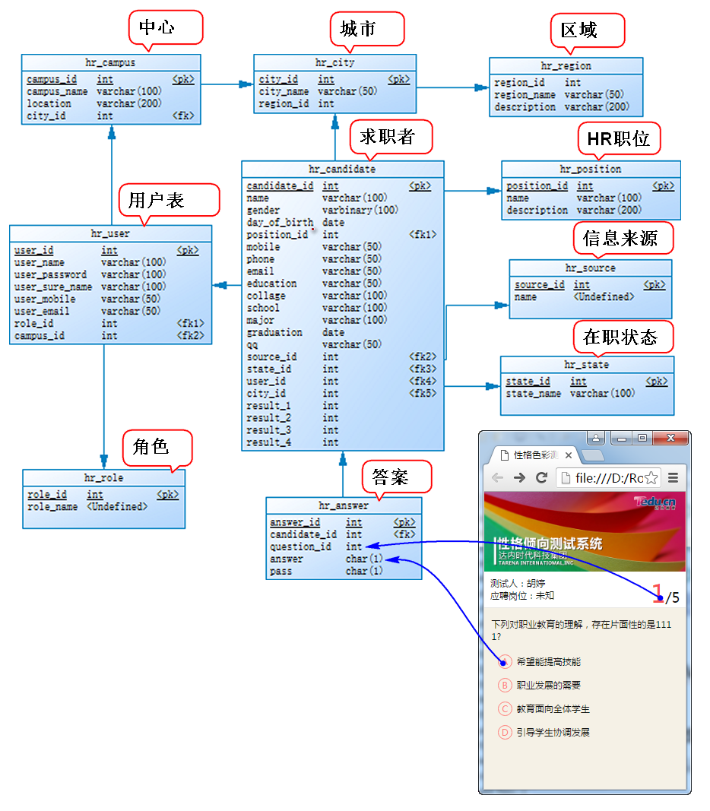
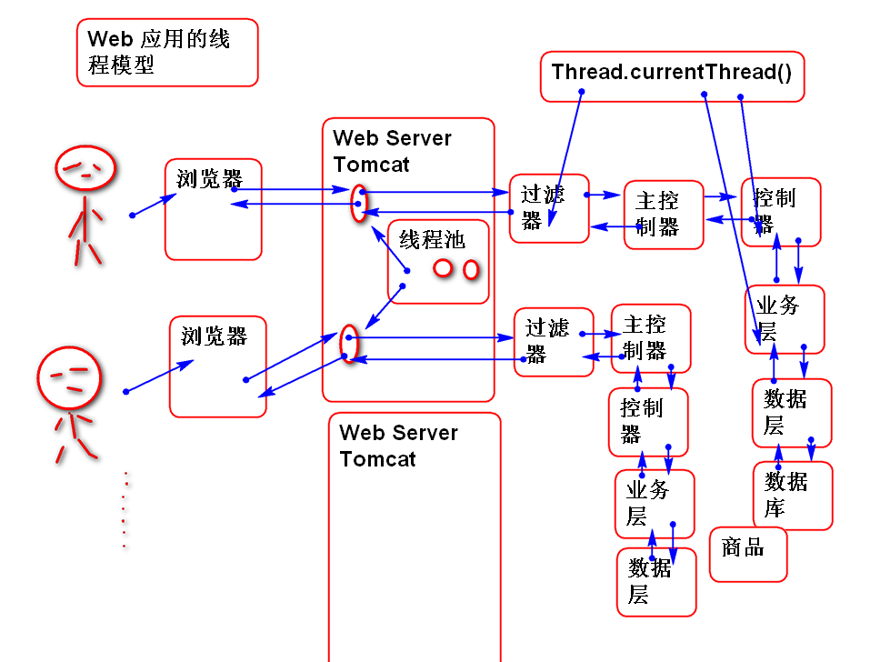
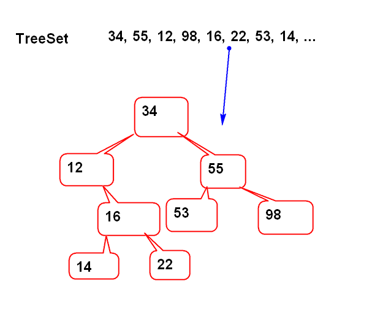

HR测评系统其目的是对应聘人员的性格倾向继续基本评估，其评估结果作为参考。
HR将被测评人信息录入到系统，被测评人通过手机二维码进入到测评页面，填写问卷，问卷结果自动统计并且反馈给HR。
系统界面请参考 静态页面部分

请学员参考云笔记，自行实现案例代码。
基础软件架构：

互联网架构加Java应用。

互联网架构关键点
有100数，全部是 0~9 个位数，统计每个数字出现的次数。 ary = {0, 5, 1, 5, ....}; counter = new int[10]; for(int i:ary) counter[i]++;
10万个从0开始连续整数，去掉两个，然后打乱，找出是那两个数？
ary = {2,3,100,234,...}; boolean[] used = new boolean[100000]; for(int n:ary){ used[n]=true; }
非常多的数，找出最大的前100个

代码：
TreeSet<Integer> set=
new TreeSet<Integer>();
for(int i=0; i<100000; i++){
int n =
(int)(Math.random()*1000000);
set.add(n);
if(set.size()>10){
Iterator ite=set.iterator();
ite.next();
ite.remove();
}
}
System.out.println(set);
分析：
int i = 122122;
char[] chs= {'0','1','2','3',...'f'};
0 1 2 3 15
int n = i & 0xf; // n = 0 1 2 ~ 15
char c=chs[n]; // c = '0' '1' '2' ~ 'f'
i = i >>> 4; // i>>>=4;
i = 0
n = i & 0xf
c = chs[n];
代码：
char[] chs="0123456789abcdef".toCharArray();
int i = 1292182;
char[] buf=new char[8];
int index = buf.length-1;
do{
buf[index--]=chs[i&0xf];
i >>>= 4;
}while(i!=0);
String hex = new String(buf, index+1, 8-index-1);